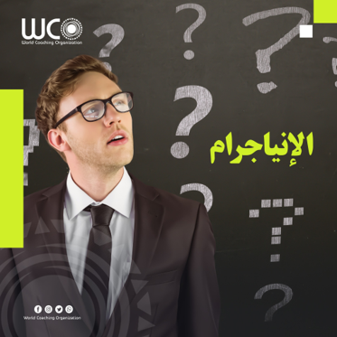
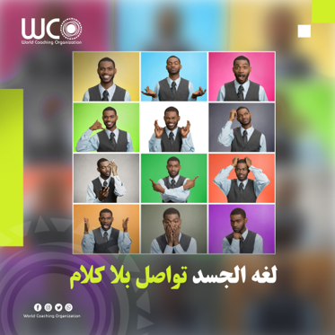

الإنياجرام
الإنياجرام هي اداة بتقوم بدور العراف في تحليل الشخصيات بس بدل متروح للعراف عشان تعرف شخصيتك الإنياجرام بتوفر عليك المشوار ده وبتقولك انت ايه النمط اللي شخصيتك بتعبر عنه وايه خصائص وتصرفات النمط ده فمثلا لو انت نمط شخصيتك "المستكثر" هتشوف نفسك دايما حد طيب ومقتنع دايما برأيك يعني كأنك دكتور في الحياة , فالإنياجرام بتساعدك انك تعرف نمط شخصيتك و ازاي تستفيد منه وتكون احسن نسخة من نفسك
ولو حابب تعرف اكتر عن الإنياجرام اكتب لنا في الكومنتس
World Coaching Organization

World Coaching Organization

ازاى تخلى ابنك غير سوي نفسياً في 5 خطوات بس؟
-خليه معندهوش اي ثقة في نفسه
-متديلوش فرصة للتعبير عن ايه اللي عاجبه وايه اللي مش عاجبه
_ اجبره انه يقعد مع أشخاص مش بيحبهم لحد ميبقى انطوائي
-خليه دايماً مقفول عليه من العالم الخارجي ومحروم منه
واهم خطوه :
-الضرب والأذى الجسدي أنجح طريقة لإنتاج إنسان مؤذي

بنسمع كثير عن مصطلح لغات الجسد بس عمرنا ما فهمنا معناه فعلا
طيب التعريف المبدئي للغات الجسد: هي اللغة اللي من خلالها نقدر نوصل مشاعرنا ونتواصل مع الآخرين دون ما نتكلم
عن طريق لغات الجسد بنفهم ازاي تأثير الغضب أو الفرح أو توتر بينعكس على أجسامنا
يعني مثلا وقت التوتر بنلاحظ أن الشخص في حالة تشنج في عضلات الجسم وحركته بطيئة أقل نشاطا وأقل انسيابية أما وقت العصبية بنلاحظ إن تعابير الوش بتتغير وحركات انفعالية وسريعة
لغات الجسد هتحسن فهمك للآخرين والوقت الكافي والتدريب الكافي هيخلوك تقدر تستخدم لغة الجسد بطريقة فعالة وتفهم الأشخاص بطريقة فعالة أكثر بكثير
طب احنا ليه بنتعلمها:
• عشان نعرف الآخرين بطريقة أفضل
• نظهر كمحترفين
• تقدر تفهم اللي حواليك بشكل أفضل
باختصار "بينما الفم يحكي قصة معينة... لغة الجسد قد تروي قصة مختلفة"
تابعنا لمعرفة المزيد